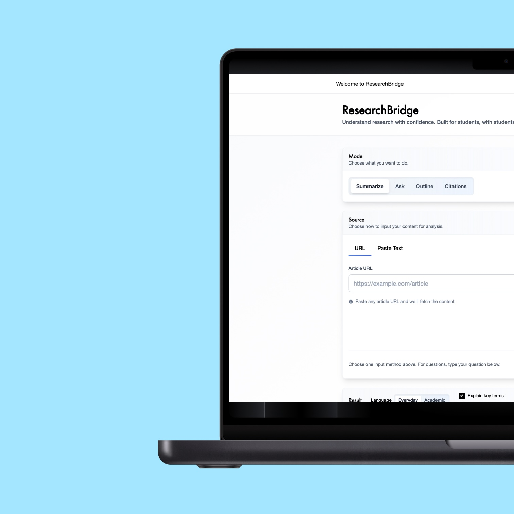
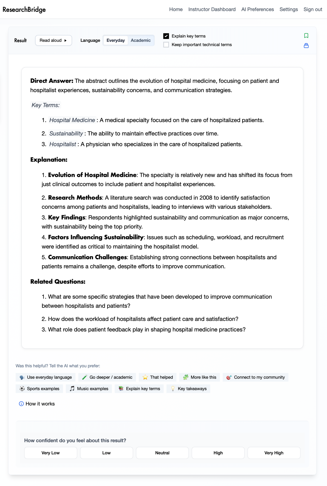
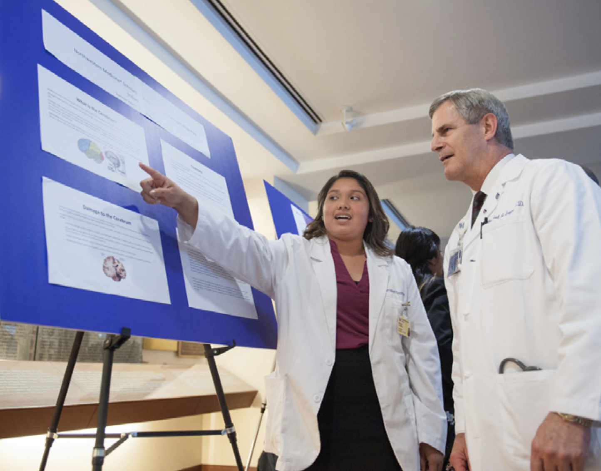
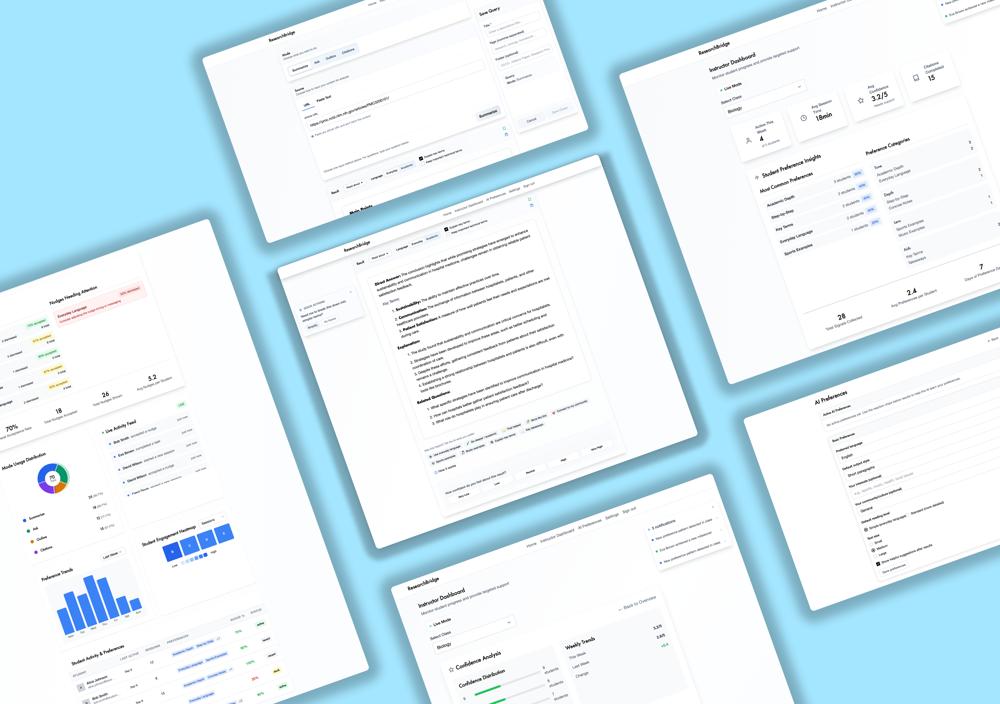
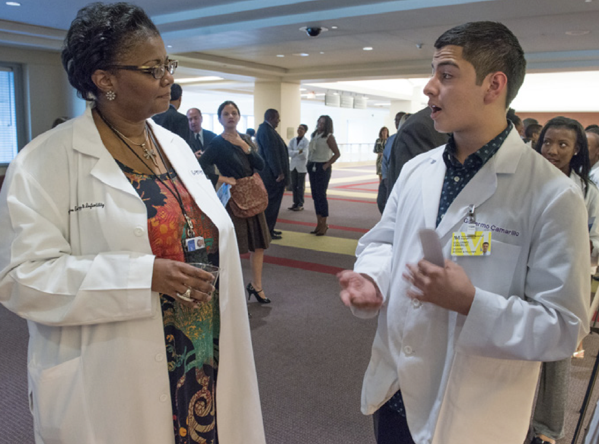

AI Research Platform
ResearchBridge is a multi-modal research companion for students and instructors

Role
Product strategy
AI-PM Intern
Organization
Northwestern Medicine
Youth Programming
Timeline
6 months
Spring & Summer 2025
Tools
Figma
GPT-4
Cursor AI
Focus
AI-assisted Learning
Research Equity
Curriculum Prototyping

Overview
ResearchBridge is a platform I led from concept to adoption, designed to make academic research less intimidating and more equitable for first-generation and underrepresented high school students. What began as an AI workbook grew into a multi-modal research companion serving both sides of the learning experience:
- Students gain scaffolds that boost confidence, curiosity, and fluency in research.
- Instructors gain visibility and tools to guide engagement equitably at scale.
3x
Insight quality
95%
Confidence gains
100%
Adoption rate
This was about more than AI adoption. It was about designing for students who had been left out of both tech fluency and traditional research pipelines.
Challenge
For students: Research was overwhelming. Most had limited exposure to scholarly work, AI tools, or independent synthesis, which eroded confidence.
For instructors: With program size doubling, it was nearly impossible to track engagement, spot inequities, or provide timely, individualized support.
The challenge wasn't just delivering research skills — it was scaling equitable engagement on both sides.

Solution
I designed ResearchBridge as a two-sided system:
For Students
- Scaffolded GPT-powered modules for summarizing, questioning, and outlining.
- Multi-modal outputs: text, visuals, and reflections.
- Built-in ethical check-ins and prompts for critical thinking.
- Personalization: everyday vs academic tone, examples tied to student context.
For Instructors
- A lightweight dashboard surfacing:
- Mode usage patterns (summarize, ask, outline, cite).
- Confidence signals and reflection depth.
- Source quality breakdowns (peer-reviewed, gov, news, etc.).
- Alerts for "stuck" students (repeated clarifications, low activity).
Designed as support, not surveillance — focusing on trends and equity, not micromanagement.
Scalable insights for program leads to shape curriculum.


Impact
Students: 3× improvement in insight quality, 95% reported confidence gains.
Instructors: First-ever visibility into research engagement at scale, enabling equitable interventions.
Program: 100% adoption into next-year curriculum, plus a roadmap for NM Scholars to expand AI equity initiatives.
Reflection
ResearchBridge is more than an AI tool — it's a platform that rethinks how research can be learned, taught, and scaled equitably. By designing for both students and instructors, I helped NM Scholars move from a one-off workbook experiment to a sustainable system for building research confidence and equity.
Key Decisions
Scoped GPT prompts to build confidence, not shortcuts.
Removed open-ended tasks that caused cognitive overload.
Integrated reflection checkpoints for ethical reasoning.
Created instructor-facing summaries that are aggregate, not invasive, to balance student trust with program needs.
